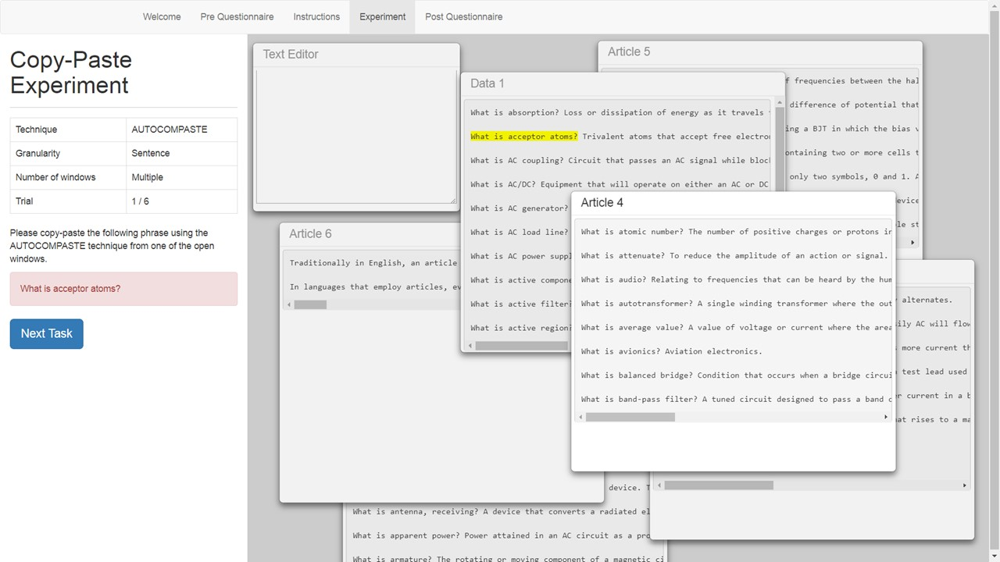
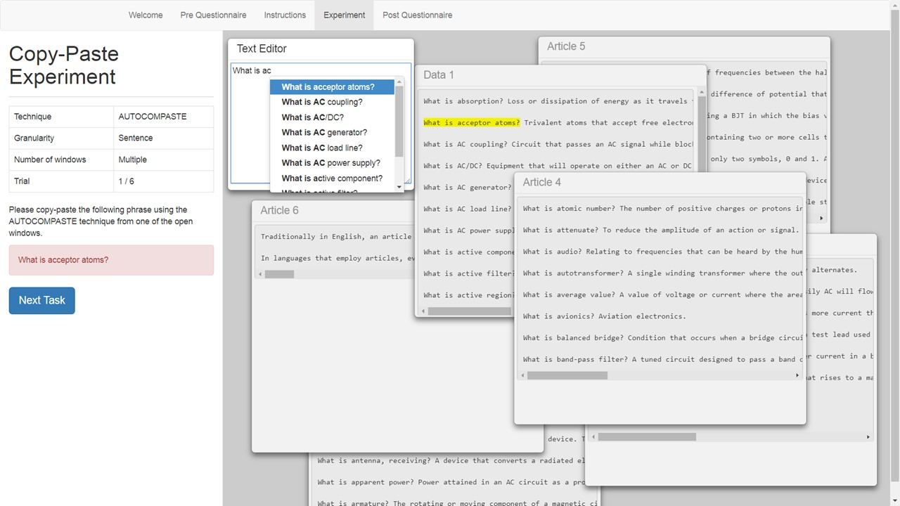
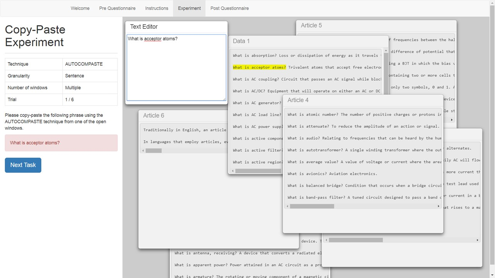
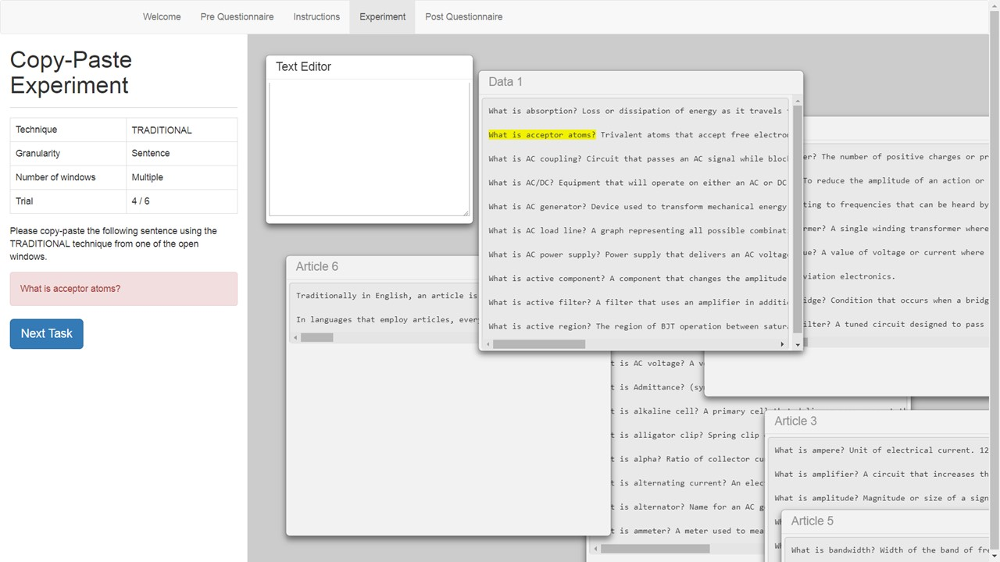
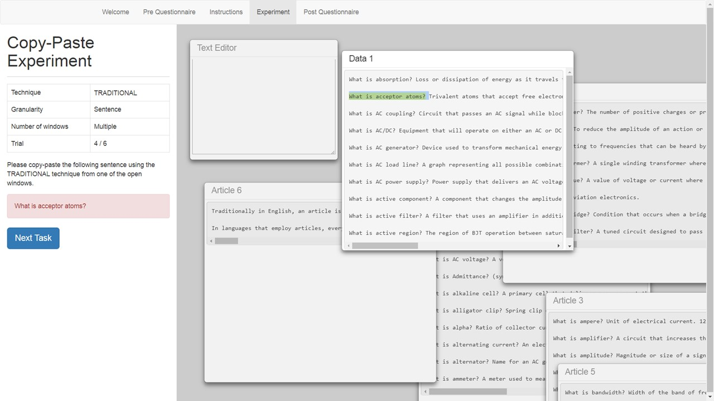
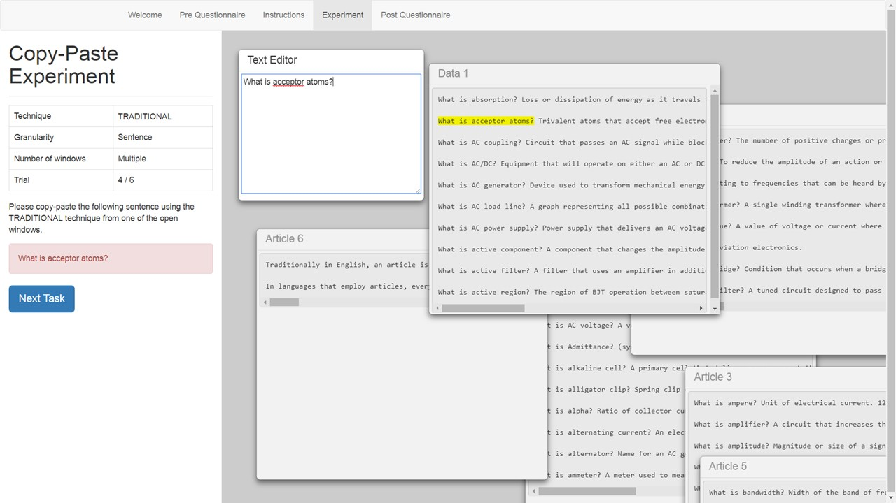

Dear participant , please read the instructions before the experiment.
The experiment will consist of 6 tasks for you to complete.
The technique that you are using, the granularity (the length of text to copy), the number of windows open and the trial number are given in a table on the left of the screen with the white background.
The text to be copied is highlighted in pink on the left side of the screen.
The text editor and articles to be used are given on the right side of the screen with the grey background.
The text that you need to copy can be found in the articles highlighted in yellow. Please refer to Figure 1 below.
You will first be tasked to use AutoComPaste to copy the selected text into the text editor.
To do so, click the text editor and start typing the text to copy. The text will appear in a dropdown box. Please refer to Figure 2 below.
To choose the text that you wish to copy, either click the text or press enter to paste the text highlighted in blue in the dropdown box into the text editor.
The result should look similar to that in Figure 3 below.
Once done, click the Next Task blue button and continue with the next two tasks.
For the 4th task onwards, you will be required to use the traditional method of copying and pasting text, which is by using CTRL-C and CTRL-V. The screen should look like that in Figure 4.
Continue by using CTRL-C and CTRL-V to copy and paste the required text into the text editor. Please refer to Figure 5 below.
Paste the text into the text editor to complete the task. The end result should like the screen given in Figure 6. and click the Next Task blue button to proceed with the next few tasks.
Once all 6 tasks are completed, please continue to fill up the post-experiment questionnaire.
Thank you for your participation.